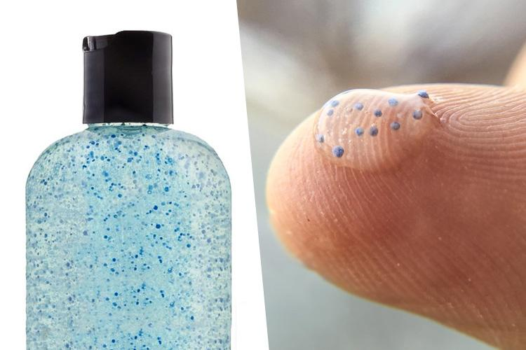
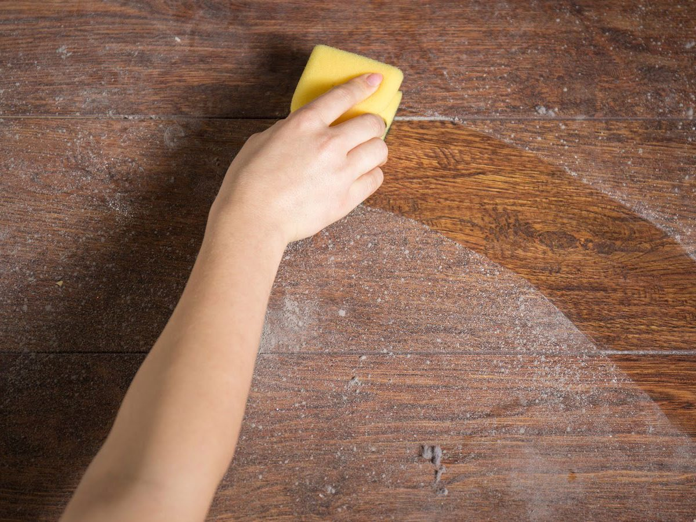
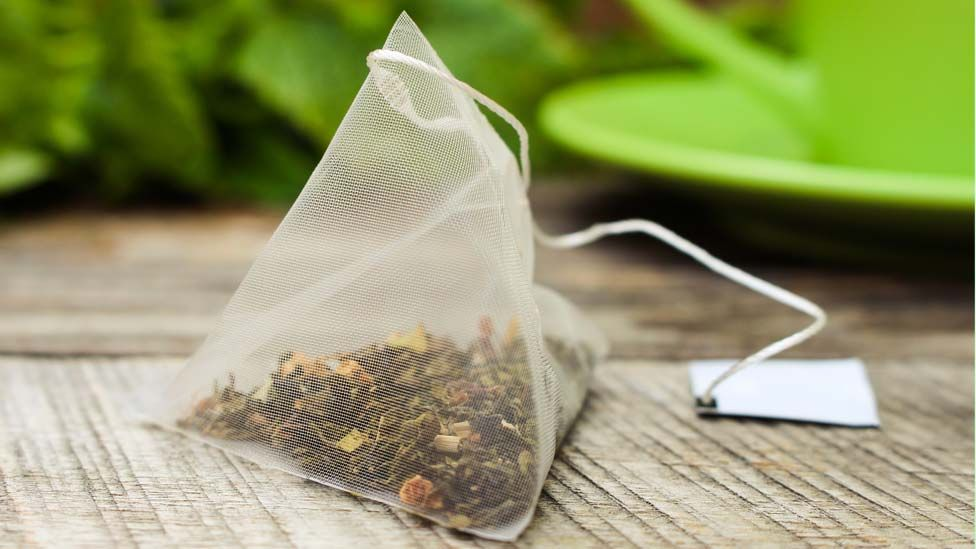

Plastic in Our Air
By Vidisha R.
Published: 10/01/2022

In 1952, from the 5th of December to the 9th, a combination of industrial pollution and high pressure weather conditions led to London experiencing an enormous wave of smog running through the city. About 4,000 people are known to have died due to bronchitis and pneumonia, caused by the smog.
Since then, the growth of plastic generation, use and demand has grown ten bounds. Now, we have more to worry about than industrial pollution, car emissions or toxic factory runoffs in the air. Now, we must start tackling the issue of plastic in the air.
Plastic is an incredibly invaluable material to us humans. It’s durable, inexpensive, flexible, mouldable, unreactive, and we can shift it to any color or shape we’d like. We have become almost entirely dependent on this material. In hospitals, plastics are used to keep things sterile. Window trims, door frames and wall insulation materials are generally all made from plastic, keeping our homes insulated and more energy efficient. In a lot of ways, the plastic boom since the 1950s has helped us become more resource efficient, but the problem lies in its abundant use. Plastic is becoming increasingly dominant in things we don’t need. Plastic bottles, play toys and more things that we would do just the same without. There is so much of it now that it is just inescapable, posing a global health concern. As a result of commercial product development and the breakdown of larger plastics, microplastics are formed, these tiny plastic particles travel through the air, oceans, rain and even our table salt!
In 1998, Pauly J L et al. conducted a study and examined whether inhaled plants, such as cotton and polyester fibers(plastic) are present in human lungs and, if so, whether these inhaled fibers are also present in human lung cancers. Lung cancer specimens of different anatomical types and matched lung tissue were obtained from patients undergoing a lung resection for the removal of a tumor. They found that of the 114 human lung specimens examined, fibers were observed in 99, a staggering 87%.
But there are ways that we can ensure our safety and reduce the spread of microplastics in the environment!
1. Don’t microwave your food!

The BPA and phthalates in your plastic takeout boxes leach a lot easier when heated. Instead transfer the food to a glass container or dish and heat that instead. Similarly avoid plastic takeout cups as they can also expose microplastics easier when filled with hot liquids.
2. Use plastic free cosmetics and microbead free beauty products
3. Dust your house!!
Another way that microplastics enter our bodies is because they’re so small, that they get mixed up with the dust on our windows or under our beds. So clean up!
4. Replace tea bags with loose-leaf tea
A recent study done at McGill University in Canada found that when a plastic tea bag is used it releases more than 10 billion microplastics.
5. Change your laundry routine

60% of all current clothing material is made of synthetic fibers like nylon or polyester and are popular due to their beneficial uses during cold seasons, but each item made from these materials releases thousands of microplastics every wash. Buy wool or silk made clothes or air dry your clothes both of which help reduce the spread of those innumerable microplastics.
Works Cited
- Bbci.co.uk, 2022, ichef.bbci.co.uk/news/976/cpsprodpb/12849/production/_108994857_teabag-index-getty2.jpg. Accessed 1 Mar. 2022.
- Cloudfront.net, 2022, domf5oio6qrcr.cloudfront.net/medialibrary/7112/is-microwave-food-healthy.jpg. Accessed 1 Mar. 2022.
- Environ. Sci. Technol. 2019, 53, 21, 12300–12310Publication Date:September 25, 2019
- Molekule.science, 2021, molekule.science/wp-content/uploads/2017/09/where-does-dust-come-from-e1546642869752.jpg. Accessed 1 Mar. 2022.
- Pauly, J L et al. “Inhaled cellulosic and plastic fibers found in human lung tissue.” Cancer epidemiology, biomarkers & prevention : a publication of the American Association for Cancer Research, cosponsored by the American Society of Preventive Oncology vol. 7,5 (1998): 419-28.
- “Redirect Notice.” Google.com, 2022, www.google.com/url?sa=i&url=https%3A%2F%2Fwww.getsetclean.in%2Fin%2Fen%2Fclothing-care%2Fhow-to-wash-clothes-the-right-way-last-longer.html&psig=AOvVaw3ukFmzNMwPuXH4AZznkPxD&ust=1648353381902000&source=images&cd=vfe&ved=0CAsQjRxqFwoTCPDjvYLx4vYCFQAAAAAdAAAAABAP. Accessed 1 Mar. 2022.
- Scientificamerican.com, 2022, static.scientificamerican.com/sciam/cache/file/ECDD6AE4-3A28-42B8-BEC4804C91B6207F_source.jpg?w=590&h=800&09E3F7E9-4F97-4B6B-B08DEBD46FAA43EA. Accessed 1 Mar. 2022.
- Thenewsminute.com, 2022, www.thenewsminute.com/sites/default/files/styles/news_detail/public/Microbead-Collage_750.jpg?itok=yj_1Xcn1. Accessed 1 Mar. 2022.